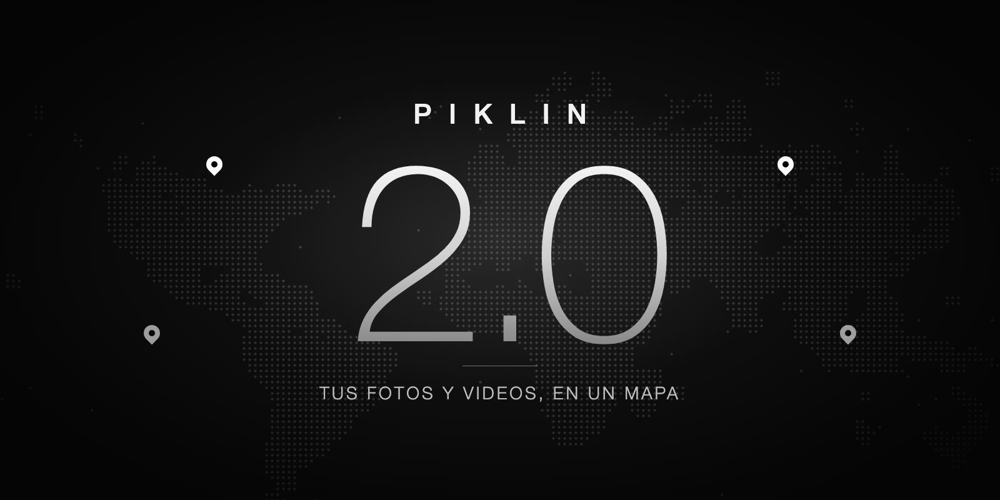
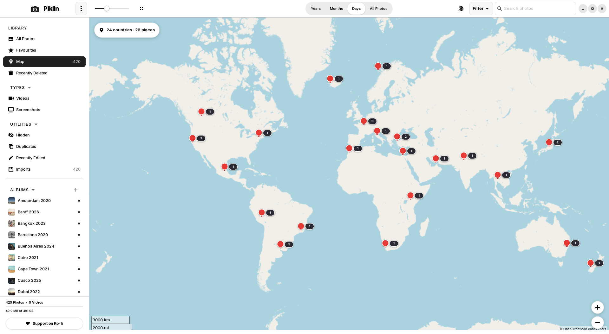
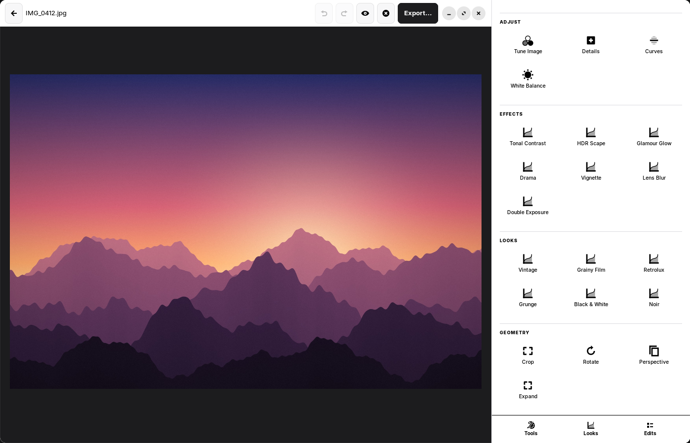
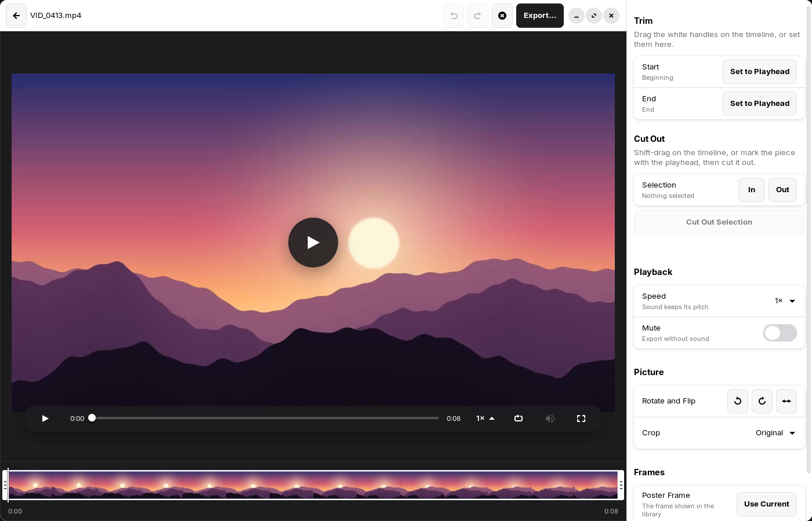

A free photo and video library for Linux and Mac. Your photos never leave your computer, and neither do their coordinates.Una biblioteca de fotos y videos gratis para Linux y Mac. Tus fotos no salen de tu computadora, ni sus coordenadas tampoco.
Free for any use · Linux and macOS · version Gratis para cualquier uso · Linux y macOS · versión 2.0.0
Open it and see everywhere you have been, as pins. Rest on a pin and its albums slide in beside the map. Zoom from a country to a city to a street corner.Ábrelo y verás todos los lugares donde has estado, como pines. Detente sobre un pin y sus álbumes aparecen junto al mapa. Acerca de un país a una ciudad y a una esquina.

Most photos carry no location. Right-click an album, type the place, and every photo in it lands on the map at once. Thousands of photos in a few clicks.La mayoría de las fotos no traen ubicación. Haz clic derecho en un álbum, escribe el lugar y todas sus fotos caen en el mapa a la vez. Miles de fotos en unos pocos clics.
Piklin carries a list of the world's towns on your own disk. Turning a pin into a city name never sends a coordinate anywhere.Piklin lleva una lista de los pueblos del mundo en tu propio disco. Convertir un pin en el nombre de una ciudad nunca envía una coordenada a ninguna parte.
See how many countries and places you have visited, with the cities listed inside each country.Mira cuántos países y lugares has visitado, con las ciudades listadas dentro de cada país.
Organize, edit and share your memories without an account, a subscription or a cloud.Organiza, edita y comparte tus recuerdos sin cuenta, sin suscripción y sin nube.
Tested with 150,000 photos on a normal computer. Browsing stays instant, and Piklin stays light on memory.Probado con 150,000 fotos en una computadora normal. Navegar sigue siendo instantáneo y Piklin gasta poca memoria.
22 RAW formats from Nikon, Canon, Sony and more, plus a full video player and editor.22 formatos RAW de Nikon, Canon, Sony y más, además de un reproductor y editor de video completos.
Tune, curves, looks, crop and perspective. Your originals are never touched.Ajustes, curvas, estilos, recorte y perspectiva. Tus originales nunca se tocan.
Free up disk space with compression that checks the result looks the same as the original.Libera espacio en el disco con una compresión que comprueba que el resultado se ve igual que el original.
Back up to a drive, a NAS or a cloud you own. A restore returns your library exactly as it was.Respalda en un disco, un NAS o una nube tuya. Al restaurar, tu biblioteca vuelve exactamente como estaba.
Cameras, iPhones and iPads, folders and drives, on Linux and on Mac.Cámaras, iPhones y iPads, carpetas y discos, en Linux y en Mac.


Find your computer and download one file. The buttons above pick the right one for you.Busca tu computadora y descarga un archivo. Los botones de arriba eligen el correcto por ti.
| Your computerTu computadora | FileArchivo | What it isQué es |
|---|---|---|
| 🍎 Mac — Apple Silicon and Intel🍎 Mac — Apple Silicon e Intel | Piklin .dmg | Open it and drag Piklin to ApplicationsÁbrelo y arrastra Piklin a Aplicaciones |
| 🐧 Linux PC — Intel or AMD🐧 PC con Linux — Intel o AMD | piklin .deb | Installer for Ubuntu, Mint and DebianInstalador para Ubuntu, Mint y Debian |
| 🐧 Linux PC — Intel or AMD🐧 PC con Linux — Intel o AMD | Piklin AppImage | Runs without installing; works on Fedora tooFunciona sin instalar; también en Fedora |
| 🐧 Linux ARM — 64-bit🐧 Linux ARM — 64 bits | piklin arm64 .deb | Installer for Ubuntu and DebianInstalador para Ubuntu y Debian |
| 🐧 Linux ARM — 64-bit🐧 Linux ARM — 64 bits | Piklin aarch64 AppImage | Runs without installing; works on Fedora tooFunciona sin instalar; también en Fedora |
Mac needs macOS 11 Big Sur or newer. The Mac app is not signed by Apple: the first time, right-click Piklin and choose Open. Every download is signed, and Piklin checks that signature before it updates itself.El Mac necesita macOS 11 Big Sur o más nuevo. La app de Mac no está firmada por Apple: la primera vez, haz clic derecho sobre Piklin y elige Abrir. Cada descarga está firmada, y Piklin comprueba esa firma antes de actualizarse.